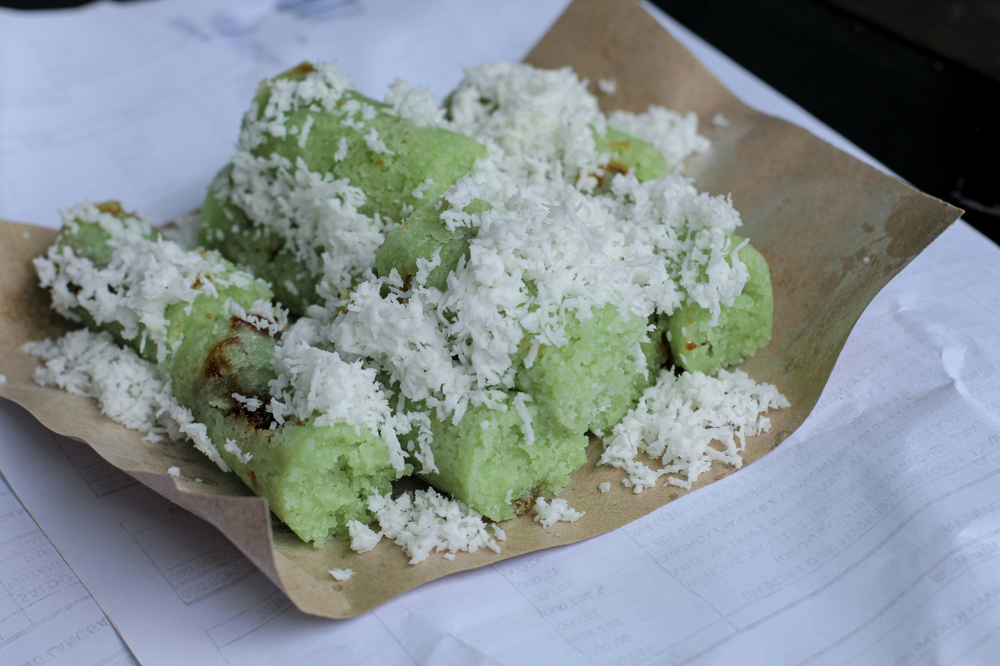

Kue Putu Recipes

About Kue Putu
Kue Putu is a traditional Indonesian street snack made from rice flour, filled with palm sugar (gula merah), and steamed inside bamboo tubes. This dessert is typically served with grated coconut on top.
Main Ingredients
- 200 grams rice flour
- 100 grams palm sugar, finely grated
- 150 ml warm water
- 100 grams grated coconut, steamed briefly with a pinch of salt
- Pandan leaves for aroma (optional)
How to Make it
- Mix the rice flour with warm water gradually until the mixture can be molded but is not too stiff.
- Prepare the special bamboo tubes (or modern molds) for steaming the kue putu. Fill the tube halfway with the rice flour mixture.
- Add the grated palm sugar into the tube, then cover with the remaining rice flour mixture until full.
- Steam the kue putu in a preheated steamer for about 15–20 minutes until cooked.
- Once cooked, remove the kue putu from the bamboo tubes and serve with grated coconut on top.
- Kue Putu is ready to be enjoyed as a traditional Indonesian snack.